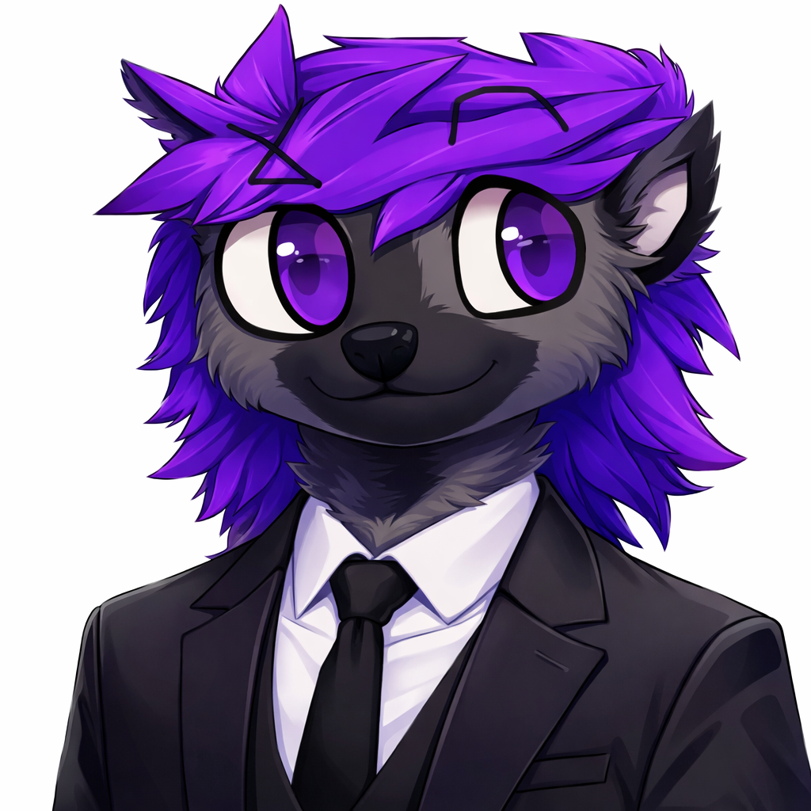

História
Eblis/iblis, nada mais nada menos que Mattyas. Era um dos gatos "Escolhidos" Para participar do mais alto experimento.
🐾 Obscuration Wiki: Mattyas / Eblis
"Sabe... Ficar debaixo da chuva pode piorar a situação de ambos. Que tal usarmos o trailer?"
📋 Visão Geral Mattyas, também conhecido pelo codinome Eblis, é um dos "Gatos Artificiais" remanescentes dos experimentos de laboratório. Embora compartilhe a aparência base com outros de sua linhagem (como Lyrilvy e o infame Gato X), Mattyas se destaca por sua postura observadora e uma aura de serenidade que beira o perturbador.
🧪 O Arco do Laboratório e a Confusão de Identidade Um ponto crucial na história de Mattyas é a distinção entre ele e os outros modelos: Lyrilvy: O gato branco de olhos castanhos e colar de lua. É o lado mais "humano" e emocional da linhagem. Gato X (O Impostor): Este indivíduo utilizou a semelhança física absoluta para se passar por Mattyas/Eblis na Sala de Realidade Avançada. O Verdadeiro Eblis: O Mattyas original carrega o peso do conhecimento do laboratório.
🐍 O Grande Engano: A Seita e Yakabu Eblis demonstrou ser um mestre da manipulação psicológica ao liderar a seita sob falsos pretextos: A Promessa do Paraíso: Ele convenceu a seita de que Yakabu transformaria o mundo em um reino de glória. A Realidade: Na verdade, ele os usou como combustível e peões para despertar a entidade destruidora. Eles morreriam acreditando em um trono, enquanto ele apenas observava a queda da realidade.
Filosofia Nilismo Pragmatico
Diferente de vilões que buscam poder, Mattyas busca a conclusão. Sua visão foi moldada pelo descarte. Se a vida é um ciclo de usar e ser usado, a única liberdade é a interrupção do ciclo. Mattyas não vê a destruição como mal. Ele vê como libertação.
Personalidade
Calma Etérea. Analítico. Ambíguo. Resiliente. Frio. Calculista. Observador absoluto.
Aparência
Pelagem branca imaculada. Guarda-chuva negro. Movimentos fluidos. Presença hipnotizante.
Atributos
- Agilidade ⭐⭐⭐⭐⭐
- Inteligência ⭐⭐⭐⭐⭐
- Presença ⭐⭐⭐⭐
- Furtividade ⭐⭐⭐⭐
🐾 Wiki de Personagem: Mattyas / Eblis

Nomes/Designações: Mattyas, Eblis, Experimento 0-180.
Espécie: Gato Russo (Super-soldado / Semideus).
Afiliação: Líder da Seita de Yákabu, Controlador das Sombras.
Vestimentas e Aparência
Fase Infantil: Como cobaia, era um jovem gato com talento ímpar.
Marca no tórax: circunferência com duas cruzes.
Fase Adulta: estilo inestimável.
Forma Possuída: corpo vermelho, olhos pretos, terceiro olho.
🐾 Wiki de Personagem: Victor Tanaka

Frases Marcantes
"Se eu morrer para aquele vagabundo diz para o Esposito que eu amo ele."
"Poxa moça me tira daqui fazendo um favorzinho... Faz horas que não vou ao banheiro."
"Calma calabreso!"
"Eu o grande Victor Tanaka vim ao seu resgate."
"Se o curupira fizer moonwalk ele vai para frente ou para trás?"
"Você matou meu amigo."